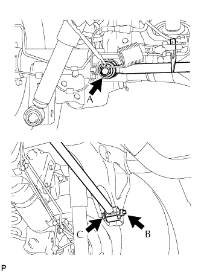

THANH ĐIỀU KHIỂN NGANG PHÍA SAU > LẮP |
| 1. LẮP CỤM THANH ĐIỀU KHIỂN NGANG PHÍA SAU |
Lắp 2 bạc mới vào thanh điều khiển.
Lắp thanh điều khiển và 2 hãm vào vỏ cầu xe.
Lắp tạm thanh điều khiển ngang bằng bu lông và 2 đai ốc.
| 2. ỔN ĐỊNH HỆ THỐNG TREO |
Hạ thấp xe.
Hãy nhún xe vài lần để ổn định hệ thống treo.
| 3. XIẾT CHẶT THANH ĐIỀU KHIỂN NGANG PHÍA SAU |
|  |
Xiết chặt 2 đai ốc.